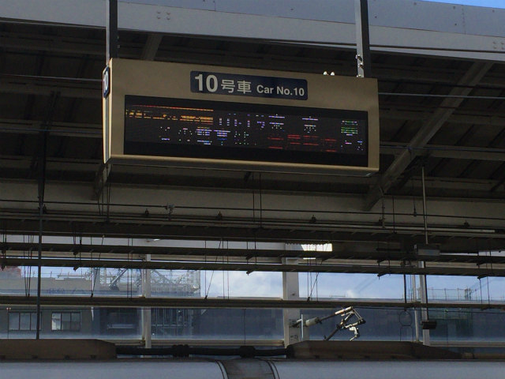
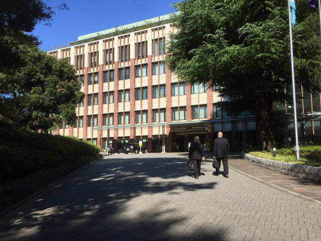
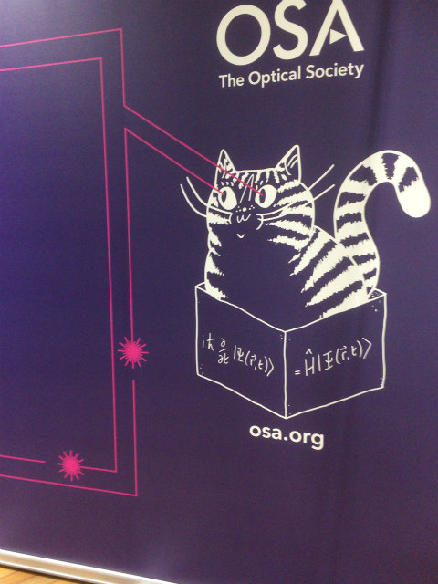
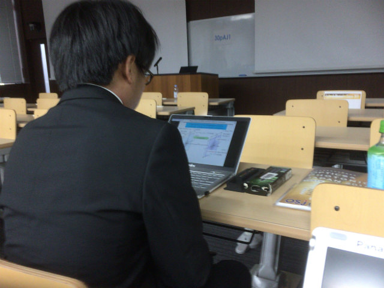
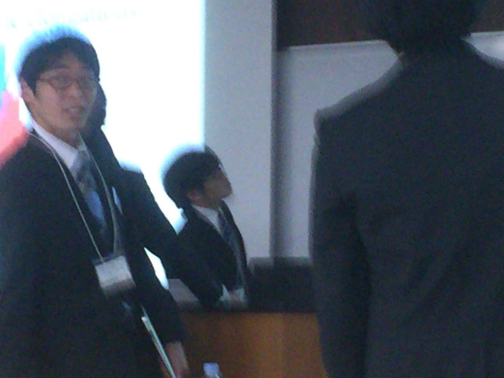
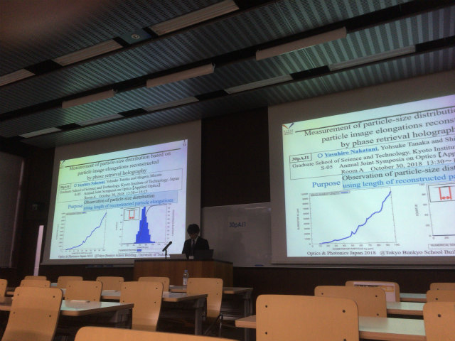
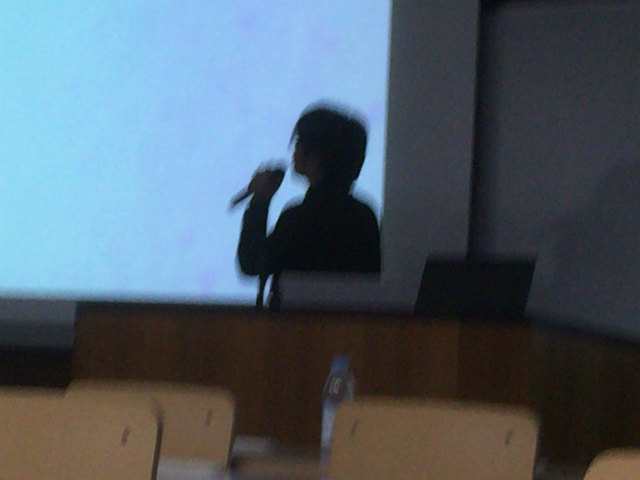
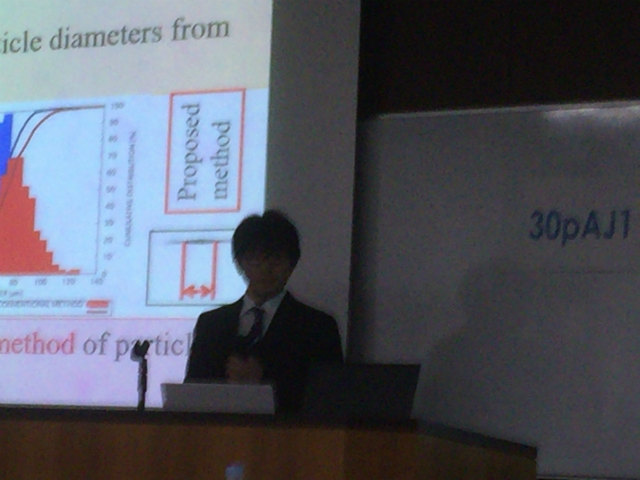
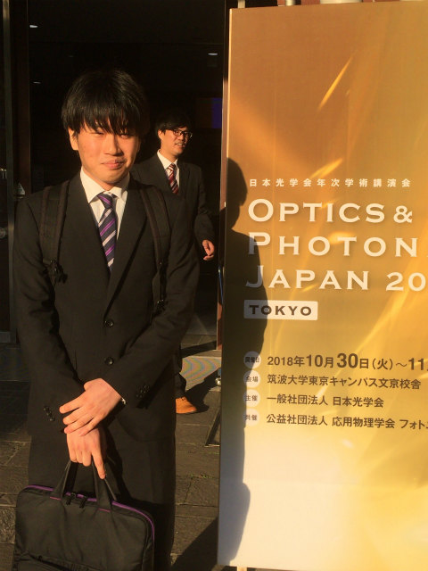

| ・ OSJ-OSA Joint Symposia on Optics 2018 @ Tokyo (2018.10.29-30) | |||
OSJ-OSA Joint Symposia on Optics 2018で，M1のN谷くんが光計測の研究で"Measurement of Particle-Size Distribution Based on Particle Image Elongations Reconstructed by Phase Retrieval Holography"の発表をおこないました．初めての英語口頭発表はかなり緊張したようです． |
|||
|

助教の人移動 |
ベストショット | ||
|

文京区の筑波大学 |

有名な猫．目からレーザーはイミフ | ||
|

ブツブツ |

動作確認 | ||
|

やりずらい位置 |

左画面選択 | ||
|

質疑中 |

おつかれ | ||